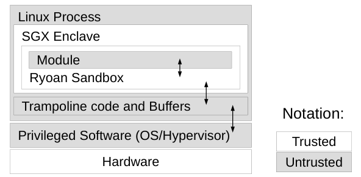
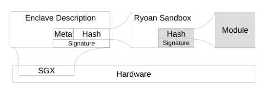
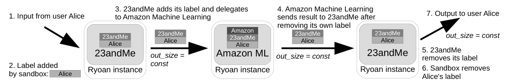
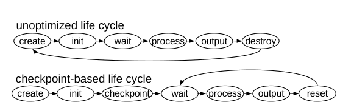
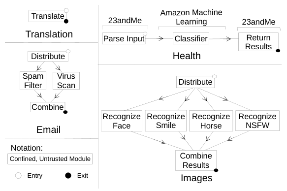
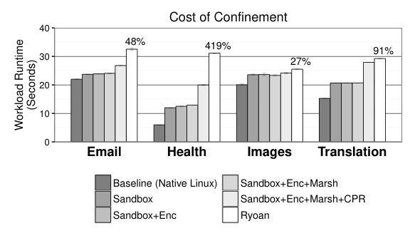
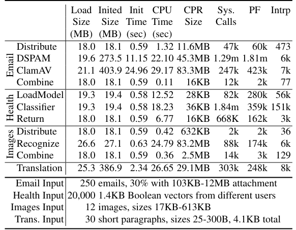
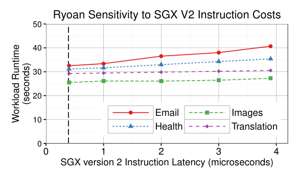

Ryoan: A Distributed Sandbox for Untrusted Computation on Secret Data
This page was written by an AI model to give a high-level overview of the paper. Please check the paper for detail: USENIX.
Data-processing services such as TurboTax, Pixlr, SAS OnDemand, or 23andMe's health analysis are convenient only if the user hands over sensitive data: tax documents, photos, genetic information. The user then has to trust that the service's software will not leak the data and that its administrators will not read it. The problem compounds when a service itself outsources work to another provider, a common "software as a service" pattern: 23andMe may want to use Amazon's machine learning service to classify health features, but then 23andMe becomes a user of Amazon, and must disclose its own proprietary health-feature correlations to a party it does not trust either. No single party in this chain controls, or is trusted by, all the others.
Hardware enclaves such as Intel's Software Guard Extensions (SGX) protect a process's memory from privileged software (OS, hypervisor), encrypting it off-chip and letting a remote user cryptographically verify what code is running. Systems like Haven and SCONE use this to protect a user's own trusted application from an untrusted cloud platform. But that model assumes the application does not collude with the platform. In Ryoan's setting, neither the application nor the platform is trusted by the data owner, and they can collude: even inside a perfectly isolated enclave, untrusted code can covertly signal secrets to the platform through system call arguments, I/O sizes, or timing, channels the platform can observe from outside the enclave.
Ryoan's idea is to confine the untrusted code itself, not just protect it. It wraps each untrusted data-processing module in Google Native Client (NaCl), a compiler-verified software-fault-isolation (SFI) sandbox, and runs that sandbox inside an SGX enclave, so hardware stops the untrusted platform from reading or tampering with the sandbox, while NaCl plus Ryoan's own runtime stop the module from leaking data through any channel it touches. Ryoan further assumes a request-oriented, "one-shot" data model: a module processes one unit of input, produces output, and is reset before it sees the next request, so it can never accumulate secrets or combine evidence across requests. Multiple Ryoan instances, possibly on different providers' machines, chain together into a directed acyclic graph (DAG) that a user defines and verifies via mutual SGX attestation, forming a distributed sandbox.
Within that sandbox, Ryoan tracks data flow with lightweight secrecy labels: once a module reads another principal's tagged data it becomes "confined" and loses access to persistent storage or the network until it is reset. It also forces every module's output size to be a fixed, DAG-specified function of its input size (closing a data-size covert channel) and limits each module to a single, bounded opportunity to leak through its processing time. Measured on real SGX hardware plus a QEMU-based SGX-v2 emulator across four real applications (email spam/virus filtering, a synthetic 23andMe-style health classifier delegating to a stand-in for Amazon ML, OpenCV image classification, and Moses-based machine translation), Ryoan's end-to-end overhead relative to native Linux execution ranges from 27% to 419% depending on how much real computation each request does relative to Ryoan's fixed per-request costs.

Key takeaways
- Ryoan confines untrusted, mutually distrustful modules (not just protects a trusted app) by running a Native Client SFI sandbox inside an SGX enclave, stopping intentional, colluding leaks as well as accidental ones.
- Secrecy labels (per-principal tags) propagate through a DAG of Ryoan instances; reading another principal's tagged data confines a module until reset, so a company outsourcing to a sub-provider cannot have its own secrets leaked back by that sub-provider.
- Data-oblivious I/O (output size is a fixed function of input size) and a request-oriented, one-shot data model together bound two classic covert channels: output size and processing time.
- Checkpoint-based enclave reset replaces full enclave teardown and application reinitialization (tens of seconds for database-backed modules like ClamAV) with a page-granularity restore costing under 10 ms per request.
- Across four real workloads on real SGX hardware, end-to-end overhead vs. native Linux is 48% (email), 419% (health), 27% (images), and 91% (translation); confinement and checkpoint-restore costs dominate, not SGX itself.
From hardware enclaves to a distributed, leak-proof sandbox
SGX and the threat model, module confinement, trust and labels, I/O and timing channels, checkpoint-based reset, and the prototype.
1 · SGX and the threat model
Intel's Software Guard Extensions (SGX) let a process create an enclave, a protected address region whose code and data are hidden from everything outside it, including the operating system and hypervisor. Hardware encrypts and hashes enclave contents whenever they leave the chip, so privileged software can manage memory (paging, scheduling) without reading or tampering with it. SGX also produces an attestation: a cryptographic hash (MRENCLAVE) or signed identity (MRSIGNER) of an enclave's initial code and data, which a remote user can verify before trusting it with secrets.
2 · Why protecting a trusted application is not enough
Prior enclave systems such as Haven and SCONE protect an application the user trusts from an untrusted cloud platform; the threat is a malicious OS attacking a willing, honest application. Ryoan's setting is harder: the application itself may be malicious or may collude with the platform to extract secrets, using covert channels visible to the platform from outside the enclave, such as the sizes and timing of the system calls the module makes. Confining arbitrary untrusted code is a classically hard problem (Lampson's confinement problem), but Ryoan gets two things for free: SGX removes the need for the sandbox to rely on address-space separation to stop escapes, and the paper narrows the problem to request-oriented servers, where a module only ever needs to see one unit of work before being reset.
3 · Confining a module: Native Client inside an enclave
Each untrusted module (code, initialized data, and a maximum dynamic memory size) is loaded through Google Native Client's load-time validator, which disassembles the binary and enforces software-fault isolation: all memory accesses, including instruction fetches, stay inside the module's address range, and system calls are redirected to NaCl's runtime instead of the OS. Ryoan adds two constraints on top of vanilla NaCl: modules may not contain SGX instructions, and control flow is restricted to the loaded code (no dynamic code generation or JIT). Table 1 of the paper lists the full set of properties Ryoan imposes on a module and which technology enforces each one.
| Property imposed on the module | Enforced by | Reason |
|---|---|---|
| OS cannot access module memory | SGX | Security |
| Initial module code and data verified | SGX | Security |
| Can only address module memory | NaCl | Security |
| Ryoan intercepts syscalls | NaCl | Security |
| Cannot modify SGX state | NaCl | Security |
| User defines topology | Ryoan | Security |
| Data flow tracked by labels | Ryoan | Security |
| Memory cleaned between requests | Ryoan | Security |
| Module defines initialized state | Ryoan | Performance |
| Unconfined initialization | Ryoan | Compatibility |
| In-memory POSIX API | Ryoan | Compatibility |
4 · Chain of trust and establishing the distributed topology

- SGX hardware attests that a genuine instance of Ryoan is running in an enclave with the intended configuration; this is the anchor of trust.
- Within that attested instance, Ryoan verifies that the expected module binary was loaded, using a hash signed by the module's provider (identified in the prototype by the provider's public key, analogous to SGX's MRSIGNER).
- A user-specified DAG of modules is handed to a trusted master enclave, which asks the OS to start a Ryoan instance per node (possibly on different machines), then has neighboring instances perform local or remote SGX attestation and establish encrypted channels via key exchange.
- The user attests the master itself, confirms the realized topology matches her specification, and only then opens secure channels directly to the DAG's entry and exit nodes to send input and receive output. A master enclave is a convenience, not a requirement: each instance could instead verify its neighbors' identities against a DAG specification attached to every request.
5 · Secrecy labels control data flow across the DAG

Ryoan labels are a simplified form of decentralized information flow control (DIFC): a label is a set of tags, each tag identifying a principal whose secret is present. In the prototype, a user's tag is her public key, and a company signs its module binaries with a key whose public half becomes that company's tag.
- Non-confining label (empty, or only the module's own tag). The module may freely use the file system, network, or any NaCl/Ryoan service, since it has at most seen its own principal's data.
- Reading tagged data merges labels. When a module reads data carrying another principal's tag, its own label and the data's label merge, and the module's output inherits the merged label.
- Confining label (contains another principal's tag). The module is now confined: Ryoan disallows any persistent storage, enforcing the "one-shot" rule that a module cannot carry secrets from one request into the next.
- Declassification. Each module may add or remove only the single tag matching its own principal, i.e., it can declassify its own secrets but cannot strip another principal's tag. Ryoan itself is trusted to remove the user's tag only when delivering output over an authenticated channel back to that same user.
In the 23andMe/Amazon example (paper's Figure 3), the user's tag is added on input, kept through 23andMe's first module and through the Amazon classifier it delegates to (so Amazon cannot leak 23andMe's feature-extraction trade secret back to the user), removed by 23andMe's second module, and the user's own tag is removed by Ryoan only when the final result reaches the user over her secure channel.
6 · Data-oblivious communication: fixing output size
Ryoan also prevents the platform from inferring secrets by watching data volumes move between instances. Three rules make traffic independent of input content: (1) each instance reads its entire input from every connected instance before its module starts; (2) the output size is a fixed polynomial function of the input size, specified per edge in the DAG, and Ryoan pads or truncates to exactly that length; (3) the module signals Ryoan when its output is complete, and Ryoan flushes the padded output, with metadata marking real data versus padding, to all downstream instances. A module author is responsible for choosing a polynomial large enough for the true output; Ryoan will truncate or pad regardless.
7 · Bounding the processing-time channel
A module can still leak bits by varying how long it takes to finish processing, since the platform can measure wall-clock time. Ryoan's request-oriented, one-shot model limits each module to exactly one invocation per unit of secret data, so a timing-channel leak can happen at most once per request rather than being repeated and averaged out. The paper discusses, but defers to future work, two mitigations: fixed processing time (pad every execution to a worst-case duration via busy-waiting, leaking nothing but costly for workloads with variable run time) and quantized processing time (round to one of a small, fixed set of durations, leaking only the logarithm of the number of distinct durations). Access to hardware randomness (RDRAND) is optional per user, since a module with randomness and a repeated input could otherwise slowly exfiltrate the whole input over many identical requests; fixed time execution closes this too. The one-shot guarantee itself is enforced by requiring the topology be a DAG (no cycles), resetting all state derived from secret input on module reset, and reinitializing secure connections (which include replay protection) whenever a connection breaks, preventing input replay.
8 · Defending against a malicious operating system
A Ryoan instance still depends on OS-provided services (memory mapping, scheduling) that it cannot avoid, so it must distrust their results. Ryoan-libc, a modified libc, marshals system call arguments into untrusted memory, copies results back into the enclave, and checks them for Iago attacks (e.g., verifying that addresses returned by mmap do not overlap existing mappings such as the stack), keeping the state needed for these checks inside enclave memory. Ryoan-libc also keeps its own shadow copy of the enclave's virtual memory areas and verifies every mapping eagerly at request time rather than at page-fault time, following SGX's required mapping procedure: the OS maps page frames, then the enclave itself must invoke EACCEPT to confirm the mapping, and can use EMODPE/EMODPR to adjust permissions from inside or (via the OS) from outside the enclave. Faults and signals (currently just SIGSEGV) are routed through untrusted trampoline code back into the enclave, which reads reliable SGX-provided fault information before resuming or fixing up the fault.
9 · Checkpoint-based reset for an efficient module life cycle

A Ryoan module's life cycle is creation, initialization, wait, process, output, and destruction/reset. Creating and initializing an enclave is slow (the paper measured 30 ms even for a small enclave), and many legacy applications have unoptimized startup code because they assume it runs rarely. But Ryoan's one-shot rule forces every request to start from the same untainted state, turning initialization into the bottleneck on the critical path of every single request.
- Before a module is ever confined, Ryoan takes one checkpoint of its complete writable memory state, captured at the module's first call into
wait_for_work(copy-on-initialize). - While confined, the module's memory is write-protected; Ryoan catches each write's permission fault, records the page address, grants write permission via EMODPE, and resumes the module.
- On reset, only the pages recorded as written since the checkpoint are restored to their checkpointed contents and made unwritable again; unwritten pages need no work at all.
- This avoids both re-creating the SGX enclave and re-running the application's own initialization code on every request. An alternative, incremental copy-on-write checkpoint (if the upfront copy-on-initialize cost is too high) is mentioned but not the prototype's default.
10 · Implementation and prototype constraints
Ryoan is built on NaCl (commit 2d5bba1), with a new Ryoan-libc layer based on eglibc 2.19 and a modified dynamic linker so modules load into enclaves; modules must be statically linked, and the prototype drops NaCl's JIT support to save enclave memory. Two hardware limits shaped the design: the available first-generation SGX only exposes 128 MB of protected physical memory, and it lacks SGX "version 2" instructions needed for dynamic enclave memory changes, which checkpoint restore relies on; these were measured via delay injection calibrated to real EENTER/EEXIT/ERESUME costs and validated on a custom QEMU-based full-system SGX v2 emulator. A 64-bit NaCl module normally reserves 84 GB of address space (4 GB module plus 80 GB of guard pages); the paper shows the lower guard region can safely shrink from 40 GB to 4 GB, so a full Ryoan instance fits in 48 GB, under SGX's 64 GB enclave limit. Inter-instance key exchange uses Diffie-Hellman parameters embedded in SGX attestations (measured at 1.78 ms versus 1.90 ms for the same exchange via OpenSSL), with randomness from RDRAND. See the Evaluation tab for all measured results.
Evaluation
What the paper measures, its key figures and tables, and what each one shows.
All benchmarks run on a single laptop with real (version 1) SGX hardware; version-2-only features are evaluated by injecting measured instruction delays and, to run a complete SGX-v2-aware software stack, on a custom QEMU-based full-system SGX emulator.
| What | As stated in the paper |
|---|---|
| Platform | Dell Inspiron 7359 laptop, Intel Core i5-6200U 2.3 GHz (Skylake, SGX v1), 4 GB RAM; Intel's SGX Linux driver and SDK used to measure SGX instruction costs |
| Emulation | Custom QEMU-based full-system emulator extended with SGX version 2 instructions, running a complete SGX-aware Linux kernel |
| Workloads | Email: DSPAM 3.10.2 spam filter + ClamAV 0.98.7 virus scan, 250 emails, 30% with a 103 KB to 12 MB attachment. Health: SVM over 20 diseases and their top 500 correlated genes (DisGeNet), 20,000 synthetic 1.4 KB boolean vectors. Images: OpenCV 3.1.0 face/smile/horse/NSFW recognizers, 12 images, 17 KB to 613 KB. Translation: Moses French-to-English model trained on the WMT13 News Commentary set, 30 paragraphs, 25 to 300 B each (4.1 KB total) |
| Baselines | Native, unsandboxed Linux execution; overhead added incrementally as Sandbox, Sandbox+Enc, Sandbox+Enc+Marsh, Sandbox+Enc+Marsh+CPR, then full Ryoan (adds modeled SGX cost) |
| Metrics | End-to-end runtime, mean of 5 trials with 95% confidence intervals; percent slowdown vs. native; per-module load/init size, init time, CPU time, checkpoint-restore (CPR) size, syscalls, page faults, interrupts; runtime sensitivity to assumed SGX v2 instruction latency |
The four workloads are structurally different DAGs

What it shows. Figure 5 draws the module DAG behind each evaluated application: Email fans an incoming message out from a Distribute node to parallel Virus Scan and Spam Filter modules and fans the results back into a Combine node; Health runs a short sequential pipeline (Parse Input → 23andMe feature extraction → Amazon Machine Learning classifier → 23andMe return-results module); Images fans out to four parallel recognizers (face, smile, horse, NSFW) before combining results; Translation is a single Translate module. Trusted Ryoan code at the entry and exit nodes establishes the user's secure channels.
What to take from it. Pipeline depth and module count vary sharply: Translation confines just one module, while Email and Images confine three to four. The paper uses this structural difference to explain why per-workload overhead in Figure 6 and Table 2 diverges so much, since every extra confined module adds its own buffering, label, and reset costs on the critical path.
End-to-end overhead ranges from 27% to 419% over native, and confinement plus checkpoint restore dominate, not SGX

What it shows. Figure 6 stacks runtime bars (mean of 5 trials, 95% confidence intervals) for Email, Health, Images, and Translation across five configurations: native Linux baseline, +Sandbox, +Sandbox+Encryption, +Sandbox+Encryption+syscall Marshaling, +Sandbox+Encryption+Marshaling+Checkpoint Restore (CPR), and full Ryoan (adds modeled SGX cost). Labeled slowdowns over native are 48% (Email), 419% (Health), 27% (Images), and 91% (Translation).
What to take from it. Encryption adds negligible cost in every workload. Confinement (sandboxing plus Ryoan's data buffering and padding) is costly in relative terms for Health (around 100%) because its SVM classifier does very little per-request work, so any fixed Ryoan overhead is amplified; the same mechanism costs only about 18% for Images, which spends much more time in actual OpenCV computation per request. SGX's own modeled cost (EENTER/EEXIT/ERESUME delays plus TLB flushes) is a comparatively small share of total runtime across all four workloads; syscall marshaling overhead is also negligible.
Checkpoint restore turns tens of seconds of initialization into under 10 ms per request

What it shows. Table 2 reports, per module, the loaded and initialized memory size, initialization time, per-request CPU time, checkpoint-restore (CPR) size, and counts of system calls, page faults, and interrupts. DSPAM and ClamAV take 11.15 s and 24.96 s to initialize (loading spam/virus signature databases) against 22.10 s and 29.17 s of CPU time to process one email; Translation's Moses model similarly needs database-style initialization. Health's LoadModel and Classifier modules initialize in about 0.58 s each but have tiny CPR sizes (28 to 36 KB), since almost all of their memory footprint is loaded, read-only state rather than state written per request.
What to take from it. Enclave creation and module loading take under 0.5 s in every case, but application-level initialization (tens of seconds for database-backed modules) would dominate every single request without reuse. Checkpoint-based reset amortizes that cost to under 10 ms per request. The same table explains why, in Figure 6, checkpoint-restore overhead is far larger for Health (about 55% of its runtime) than for Images (about 3%): Health's per-unit CPU time (roughly 1 ms) is tiny relative to page-fault handling during restore, while Images's per-unit time (roughly 2 s) dwarfs that cost.
Runtime is only mildly sensitive to the (unmeasurable) cost of SGX version-2 instructions

What it shows. Figure 7 sweeps the emulated per-instruction latency assigned to SGX v2 instructions (EACCEPT, EMODPE, EMODPR) from 0 to 4 microseconds and plots each workload's resulting runtime. A dashed vertical line marks 0.39 microseconds, one-tenth of a measured EENTER/EEXIT pair, the value actually used to compute the Ryoan bars in Figure 6. At the pessimistic extreme where v2 instructions cost as much as a full EENTER/EEXIT pair (3.9 microseconds), Email, Health, Images, and Translation runtimes rise by 25%, 14%, 7%, and 4% respectively.
What to take from it. Because no SGX v2 hardware existed at publication time, this is a sensitivity analysis around an assumed cost, not a hardware measurement. Even under the pessimistic assumption, the added cost stays a minority contributor to total runtime for every workload, and the paper argues the actual overhead should be smaller still since its single-threaded-per-enclave workloads should see negligible extra cost from SGX v2's enclave-page-state synchronization (ETRACK).
FAQ
Q·What problem is Ryoan actually solving?▾
It lets a user get the convenience of a data-processing service (tax prep, health analysis, image classification) without trusting that service's code, developers, administrators, or underlying cloud platform not to leak her secret input, even when that service further delegates work to other untrusted providers.
Q·How is this different from Haven or SCONE, which also use SGX enclaves?▾
Haven and SCONE protect an application the user already trusts from a potentially malicious OS or hypervisor; the application itself is assumed not to collude with the platform. Ryoan assumes the opposite: neither the application code nor the computational platform is trusted, and they may actively collude to exfiltrate secrets through covert channels like syscall arguments or timing. Ryoan therefore confines the untrusted code itself rather than merely shielding a trusted one.
Q·Why is Native Client needed if SGX already isolates the enclave?▾
SGX stops the platform (OS, hypervisor, co-located VMs) from reading or tampering with the enclave's memory. It does nothing to stop the code running inside the enclave from deliberately leaking data back out, for example by crafting the arguments or timing of its own system calls. NaCl's software-fault isolation and syscall interposition give Ryoan the hooks needed to confine the module's own behavior, which SGX alone cannot do.
Q·What's a secrecy label (tag), and how does it differ from classic DIFC?▾
A label is a set of tags, each identifying a principal whose secret data is present; reading tagged data merges it into a module's label, confining the module to prevent persistence. It is deliberately simpler than full decentralized information flow control (DIFC): there is no central trusted reference monitor, principals can be service providers who trust their own code (not just independent users of a shared untrusted app), and a module can only add or remove its own single tag rather than arbitrary declassification rules.
Q·Why must module output size be a fixed function of input size?▾
Without this rule, an untrusted module could encode secret bits in how much data it chooses to send, a covert channel the platform can observe just by watching network or storage traffic. By padding or truncating every output to a size determined solely by the DAG specification and the input's length, Ryoan makes traffic volume independent of the input's content.
Q·What is the "one-shot" / request-oriented data model, and why does it matter?▾
Each module processes exactly one unit of work, then is reset (its secret-derived state destroyed) before the next request. This bounds how much any single covert channel, especially a slow one like processing time, can leak: at most one leak opportunity per unit of input, rather than many repeated opportunities that could be averaged or combined to reconstruct a whole secret.
Q·Does Ryoan actually close the processing-time covert channel?▾
Not fully in the evaluated prototype. The one-shot model limits it to leaking once per request, but full elimination requires fixed or quantized processing time (padding execution to a worst-case or rounded duration), which the paper describes as a design option and explicitly defers building and measuring to future work.
Q·Why not just destroy and recreate the enclave for every request instead of checkpointing?▾
Enclave creation plus application-level initialization can take tens of seconds for database-backed modules (24.96 s for ClamAV to load its virus database, for example), far more than the time needed to process one request (0.124 s for one email). Checkpoint-based reset captures the initialized state once and restores only the pages a request actually wrote, cutting per-request reset cost to under 10 ms.
Q·What is an Iago attack, and how does Ryoan defend against it?▾
An Iago attack is a malicious OS returning crafted, misleading results to system calls in order to compromise an application that trusts those results (for example, an mmap return address chosen to overlap the stack). Ryoan-libc checks the results of every system call it marshals on behalf of a confined module, following the same general strategy used by other systems that distrust the OS, such as Overshadow, InkTag, and Sego.
Q·What does Ryoan explicitly not protect against?▾
The paper puts denial of service, and side/covert channels rooted in hardware limitations, out of scope: cache-timing attacks between co-located processes, address-bus snooping, and performance-monitoring-unit based channels. It also does not stop a principal from leaking its own secrets intentionally or through its own bugs, since principals are assumed to trust their own code; orthogonal bug-finding and side-channel-mitigation techniques are suggested as complements, not replacements.
Q·Why Native Client specifically, rather than some other sandbox?▾
NaCl uses compiler-based software-fault isolation rather than address-space separation to confine code, which is compatible with running inside a single SGX enclave (SGX enclaves do not support the kind of multi-process address-space tricks many OS-level sandboxes rely on). It is also a mature, state-of-the-art x86/x86-64 native-code sandbox that can run as a standalone binary outside a browser.
Q·Could Ryoan support an application whose database doesn't fit in enclave memory?▾
Not as a single module: every Ryoan module must fit entirely in memory for its whole lifetime, since any swapping to disk would create an OS-visible access-pattern covert channel, and the paper judges ORAM-style oblivious storage too costly to adopt. The suggested workaround is to partition the database across multiple modules, each loading one partition, if the application can be decomposed that way.